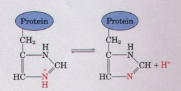
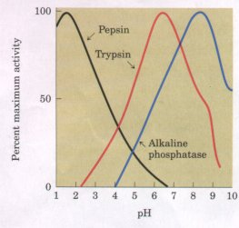
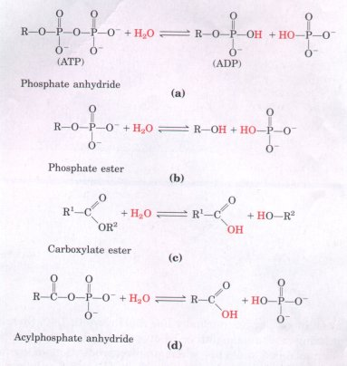

| The cytoplasm of most cells contains high concentrations of proteins, which contain many amino acids with functional groups that are weak acids or weak bases. The side chain of the amino acid histidine (Fig. 4-13) has a pKa of 6.0, and proteins containing histidine residues can therefore buffer effectively near neutral pH. Nucleotides such as ATP, as well as many low molecular weight metabolites, contain ionizable groups that can contribute buffering power to the cytoplasm. Some highly specialized organelles and extracellular compartments have high concentrations of compounds that contribute buffering capacity: organic acids buffer the vacuoles of plant cells; ammonia buffers urine. |  Figure 4-13 The amino acid histidine, a component of proteins, is a weak acid. The pKa of the protonated nitrogen of the side chain is 6.0. |
The intracellular and extracellular fluids of all multicellular organisms have a characteristic and nearly constant pH, which is regulated by various biological activities. The organism's first line of defense against changes in internal pH is provided by buffer systems. Two important biological buffers are the phosphate and bicarbonate systems. The phosphate buffer system, which acts in the cytoplasm of all cells, consists of H2PO4 as proton donor and HPO4- as proton acceptor:
H2PO4P- == H+ + HO4-
The phosphate buffer system works exactly like the acetate buffer system, except for the pH range in which it functions. The phosphate buffer system is maximally effective at a pH close to its pKa of 6.86 (see Table 4-7 and Fig. 4-11), and thus tends to resist pH changes in the range between about 6.4 and 7.4. It is therefore effective in providing buffering power in intracellular fluids; in mammals, for example, extracellular fluids and most cytoplasmic compartments have a pH in the range of 6.9 to 7.4.
Blood plasma is buffered in part by the bicarbonate system, consisting of carbonic acid (H2CO3) as proton donor and bicarbonate (HCO3- ) as proton acceptor:
H2CO3 == H+ + HCO3-
This system has an equilibrium constant
| K1 = | [H+][HCO3-] |
| [H2CO3] |
and functions as a buffer in the same way as other conjugate acid-base pairs. It is unique, however, in that one of its components, carbonic acid (H2C03), is formed from dissolved (d) carbon dioxide and water, according to the reversible reaction
CO2(d) + H20 === H2CO3
which has an equilibrium constant given by the expression
Carbon dioxide is a gas under normal conditions, and the concentration of dissolved CO2 is the result of equilibration with CO2 of the gas phase:
CO2(g) ==CO2(d)
This process has an equilibrium constant given by
The pH of a bicarbonate buffer system depends on the concentration of H2CO3 and HCO3- , the proton donor and acceptor components. The concentration of H2CO3 in turn depends on the concentration of dissolved CO2, which in turn depends on the concentration or partial pressure of CO2 in the gas phase; thus the pH of a bicarbonate buffer exposed to a gas phase is ultimately determined by the concentration of HCO3- in the aqueous phase and the partial pressure of CO2 in the gas phase (Box 4-3).
B O X 4-3 Blood, Lungs, and Buffer: The Bicarbonate Buffer System
|
| Human blood plasma normally has a pH close to 7.40. Should the pH-regulating mechanisms fail or be overwhelmed, as may happen in severe uncontrolled diabetes when an overproduction of metabolic acids causes acidosis, the pH of the blood can fall to 6.8 or below, leading to irreparable cell damage and death. In other diseases the pH may rise to lethal levels. Although many aspects of cell structure and function are influenced by pH, it is the catalytic activity of enzymes that is especially sensitive. Enzymes typically show maximal catalytic activity at a characteristic pH, called the optimum pH (Fig. 4-14). On either side of the optimum pH their catalytic activity often declines sharply. Thus a small change in pH can make a large difference in the rate of some crucial enzyme-catalyzed reaction. Biological control of the pH of cells and body fluids is therefore of central importance in all aspects of metabolism and cellular activities. | Figure
4-14 The pH optima of some
enzymes: pepsin, a digestive enzyme secreted into gastric
juice (black); trypsin, a digestive enzyme that acts in
the small intestine (red); alkaline phosphatase of bone
tissue (blue).  |
Water is not just the solvent in which the chemical reactions of livin cells occur; it is very often a direct participant in those reactions. Th formation of ATP from ADP and inorganic phosphate is a condensatio~ reaction (see Fig. 3-14) in which the elements of water are eliminate~ (Fig. 4-15a). The compound formed by this condensation is called ; phosphate anhydride. Hydrolysis reactions are responsible for th~ enzymatic depolymerization of proteins, carbohydrates, and nuclei acids ingested in the diet. Hydrolytic enzymes (hydrolases) catalyz~ the addition of the elements of water to the bonds that connect mono meric subunits in these macromolecules (Fig. 4-15). Hydrolysis reac tions are almost invariably exergonic, and the formation of cellula: polymers from their subunits by simple reversal of hydrolysis would b~ endergonic and as such does not occur. We shall see that cells circum vent this thermodynamic obstacle by coupling the endergonic conden sation reactions to exergonic processes, such as breakage of the anhy dride bond in ATP. |
 Figure 4-15 Water participates directly in a variety of reactions. (a) ATP is a phosphate anhydride formed by a condensation reaction (loss of the elements of water) between ADP and phosphate. R represents adenosine monophosphate (AMP). This condensation reaction requires energy. The hydrolysis (addition of the elements of water) of ATP releases an equivalent amount of energy. (b), (c), and (d) represent similar condensation and hydrolysis reactions common in biological systems. |
You are (we hope!) consuming oxygen as you read. Water and carbon dioxide are the end products of the oxidation of fuels such as glucose. The overall reaction of this process can be summarized by the equation:
C6H12O6 + 6O2 - > 6CO2 + 6H2O Glucose
The "metabolic water" thus formed from stored fuels is actually enough to allow some animals in very dry habitats (gerbils, kangaroo rats, camels) to survive without drinking water for extended periods.
Green plants and algae use the energy of sunlight (represented by h v, the energy of light of frequency v; h is Planck's constant) to split water in the process of photosynthesis:
| 2 H2O + 2A | hv |
O2 + 2AH2 |
In this reaction, A is an electron-accepting species, which varies with the type of photosynthetic organism.
Organisms have effectively adapted to their aqueous environment and have even evolved means of exploiting the unusual properties of water. The high specific heat of water (the heat energy required to raise the temperature of 1 g of water by 1 ?) is useful to cells and organisms because it allows water to act as a "heat buffer," permitting the temperature of an organism to remain relatively constant as the temperature of the air fluctuates and as heat is generated as a byproduct of metabolism. Furthermore, some vertebrates exploit the high heat of vaporization of water (see Table 4-1) by using (thus losing) excess body heat to evaporate sweat. The high degree of internal cohesion of liquid water, due to hydrogen bonding, is exploited by plants as a means of transporting dissolved nutrients from the roots to the leaves during the process of transpiration. Even the lower density of ice than of liquid water has important biological consequences in the life cycles of aquatic organisms. Ponds freeze from the top down, and the layer of ice at the top insulates the water below from frigid air, preventing the pond (and the organisms in it) from freezing solid. Most fundamental to all living organisms is the fact that many physical and biological properties of cell macromolecules, particularly the proteins and nucleic acids, derive from their interactions with water molecules of the surrounding medium. The influence of water on the course of biological evolution has been profound and determinative. If life forms have evolved elsewhere in the universe, it is unlikely that they resemble those of earth, unless their extraterrestrial origin is also a place in which plentiful liquid water is available as solvent.
|